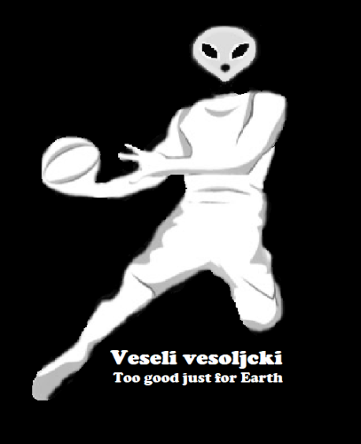

EKIPE
Dušan Špalir Veseli Vesoljčki

Team owner: Dušan Špalir
Joined league: 2017 (season 1)
History:
Team SPALIR (season 1)
Mr. Dspalir (season 2)
Arena: SpaceX Arena
Capacity: 20.000
Location: Outer space
Average ranking: 7.88 (10th)
| Sezona | Uvrstitev |
|---|---|
| 2017/18 | 5 |
| 2018/19 | 2 |
| 2019/20 | 1 |
| 2020/21 | 12 |
| 2021/22 | 11 |
| 2022/23 | 14 |
| 2023/24 | 13 |
| 2024/25 | 5 |
| 2025/26 | ... |
| AVERAGE | 7.88 |
Intervju - DUŠAN ŠPALIR (september, 2022)
Popestritev te dokaj turobne sobote je tukaj v obliki predstavitve novega moštva. Opravili smo pogovor s strategom Dušanom Špalirjem!
1) Najprej čestitke, slišali smo, da so se Vesoljčki okrepili s prav posebno okrepitvijo!. V zadnjem času imate tako opravka s kar precej jokanja. Koga pa bi označili za najvecjo jokico v ligi in ali joka bolj kot mali Taj?
Ekip v naši ligi, ki veliko jokajo je kar nekaj. Seveda nekateri upravičeno, nekateri pa v tem vsekakor pretiravajo. Težko pa rečem, da kdo bolj joka kot Taj. Mogoče se to začne dogajati le na pikniku, kjer z vsakim pivom več, na dan prihaja vse več bojnih ran,
ki nastanejo tekom sezone. Ampak to je nekaj pozitivnega. Skozi leta tekmovanja so se ustvarila že mnoga medsebojna rivalstva, ki to ligo delajo le še bolj zanimivo.
2) V zaporednih sezonah ste šli od zmagovalca pa do tistega, ki mora prinesti na piknik gajbo. Kaj je razlog te nekonstantnosti in ali to pomeni, da je letos ponovno na vrsti skok na vrh?
Nobena skrivnost ni, da nam je bil prejšnji sistem tekmovanja dosti bolj pisan na kožo kot nam je trenutni. Vesoljčki smo skozi vso zgodovino ekipa, ki dela dobro na dolgi rok, skozi celotno sezono, kjer prav vsaka tekma šteje v končni suma sumarum.
Na novi način medsebojnega dvobojevanja, pa se moramo še malce navaditi. Vse preveč se dogaja, da imamo v ključnih delih sezone preveč smole, oziroma se tekmecu vse poklopi. Mogoče je krivo tudi to, da raje zaupamo starejšim, izkušenim igralcem,
ki pa zadnje čase proti koncu sezone igrajo vse slabše, saj je mladih talentov v ligi vse več. Ampak nič za to, Vesoljčki smo že večkrat dokazali, da kar nas ne ubije nas naredi močnejše. Zato smo v našem taboru prepričani, da bo naše dolgoletno znanje ter izkušnje v prihodnje spet tisto, ž
kar nas bo postavilo tja, kamor spadamo. Torej v borbe za najvišja mesta.
3) Lani ste se na zaključni ceremoniji hvalili s svojimi FIFA skillsi. Mnoge bralce zanima, ali delate kaj na tem, da morda besede podkrepite z dejanji vsaj spomladi 2023, če so že lani bile zgolj prazne besede.
Vsekakor je to tema, ki še danes zelo boli in to poglavje zame vsekakor še ni zaprto. Vsaj dokler se z Maherjem ter Kupsom ne pomerim na pošteni revanši. S Kupsom sem se to leto že imel čast pomeriti in Luka Modrič mu je z velemojstrskim prostim strelom že pokazal, kakšen nivo igre iz študenskih let lovimo.
Ko se bodo občutki vrnili, pa verjamem, da bomo po naslednjem pikniku brali čisto druge zgodbe.
Zaključna misel
Srečno Vesoljčkom pri izpolnjevanju visokih ciljev v ligi, managerju Dušanu pa čim bolj efektivno pridobivanje znanja FIFE, šušlja se namreč, da je FIFA23 že prednaročena in je Dušan zadevo vzel smrtno resno.